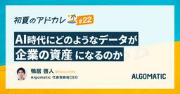
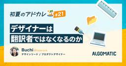

Algomatic Tech Blog
https://tech.algomatic.jp/
Algomaticの開発チームによる Tech Blog です
フィード

初夏のアドベントカレンダー完走 〜なぜ今、エンジニア全員で記事を書いたのか
Algomatic Tech Blog
初めまして、エンジニアリング室の技術広報担当です。 6月に実施した『Algomatic 初夏のアドベントカレンダー』を、無事完走しました🙌 本記事では、 なぜこのタイミングで、エンジニア全員で記事を書いたのか。 アドベントカレンダーという企画を通して、何を大事にしたかったか 技術発信を通して何を届けたいか その背景と込めた想いを、完走のご報告と合わせてお伝えします！ MON TUEWED THUFRI アドカレ開催のきっかけ きっかけは、Algomatic が 新体制に移行したこと でした。 体制が変わるというのは、組織にとって大きな節目です。 事業も、チームも、これから進む方向も、あらためて…
2日前

AI時代にどのようなデータが企業の資産になるのか
Algomatic Tech Blog
こんにちは、AI時代の企業OSをつくっています、 Algomatic CEOの鴨居です。 今回は弊社で取り組んでいる『Algomatic 初夏のアドベントカレンダー』の最終日です！ アドカレとしては最後の記事ですが、7月以降もテックブログは更新されていきます。ぜひこれからも見にきていただけると嬉しいです！ 前回の記事はこちら👇 tech.algomatic.jp さて本日のテーマは企業が蓄積すべきデータについてです。AI時代にはデータが命だということは、いまやあらゆる場面で語られています。実は、データがここまで重要視されるようになったのは10年以上前のことで、当時は「データは新しい石油である」…
3日前

デザイナーは翻訳者ではなくなるのか
Algomatic Tech Blog
はじめまして。Algomaticでプロダクトデザイン/デザインリードをしているbuchiです。 Tech blogに書くのはハードルがめちゃめちゃ高くて怯えているのですが、デザイナー視点で昨今の開発におけるデザインやデザインツールのあり方について、自身が思っていることを書いてみます。 この記事は Algomatic 初夏のアドベントカレンダー 21日目です。前回は ぴやてぃさんの「AI開発時代の多層防御を設計する〜AWSアクセスキーにまつわる怖い話〜 - Algomatic Tech Blog」でした。 tech.algomatic.jp
4日前

AI開発時代の多層防御を設計する〜AWSアクセスキーにまつわる怖い話〜
Algomatic Tech Blog
はじめに こんにちは、3月にAlgomaticにエンジニアとしてJOINしましたぴやてぃと申します。 普段はフロントエンドからバックエンド、インフラまでフルスタックに開発していて、最近はClaude Codeをはじめとする生成AIツールを活用しながら日々プロダクトを作っています。AWSが好きでいつかラスベガスに行きたいです。 前回の記事はこちら、三上さんによる「LeLabで始めるノーコード模倣学習」でした。人間にとっては簡単な動作も、ロボットが学習するには一苦労なんだな、というのがわかりとても勉強になりました。（最後のロボットの動画はなんだかかわいくて愛着が湧きました） tech.algoma…
7日前
LeLabで始めるノーコード模倣学習
Algomatic Tech Blog
はじめまして、Algomatic AIエンジニアのYusuke（https://x.com/yusuke_post）です。普段は、現場で活躍するAIを開発する案件に取り組んでいます。 『Algomatic 初夏のアドベントカレンダー』と題して、メンバーそれぞれが好きな技術を好きに語る会の19日目です。 昨日の記事は「Claude Code / Codex Hooks と nvim --server で作る terminal-native IDE」でした。 はじめに 最近、個人では SO-101 という低コストなロボットアームを題材に、シミュレーションから実機まで一通り触っていました。 これまで…
8日前

Claude Code / Codex Hooks と nvim --server で作る terminal-native IDE
Algomatic Tech Blog
Claude CodeやCodexの編集をNeovimにリアルタイム反映させる仕組みを、hooks・socket・helperで作りました。ON/OFF切り替えや逆方向の連携も紹介します。
9日前
gogとCodexでGoogleスライドを作る
Algomatic Tech Blog
はじめに AlgomaticでBtoB向けAX（AI Transformation）事業の営業をしている、五十嵐夏菜（かなきゃん）です。普段は、お客様の業務課題を整理してAIの組み込み方を提案したり、検証設計や提案資料・ウェビナーの企画運営をしています。 非エンジニアの私がテックブログを書くのは少し緊張するのですが、今回は普段 ClaudeCode や Codex で回している業務の中でも特に頻出の「スライド作成」について書いてみます。 この記事は Algomatic 初夏のアドベントカレンダー 17日目です。前回は Go さんの「AI生成コードを保守するために、開発を『水彩』と『油絵』で分け…
10日前
AI生成コードを保守するために、開発を「水彩」と「油絵」で分ける
Algomatic Tech Blog
AI支援開発で生成コードを保守可能にするには、速く作る力だけでなく、レビュー・検証・手戻りを設計する力が必要です。水彩と油絵の比喩で実務判断を整理します。
11日前
AIエージェント4年史
Algomatic Tech Blog
サムネイル こんにちは、働く人の1日の価値を100倍にしたい、株式会社Algomaticの高橋と申します！ 2026年3月まではグループ会社のAlgomatic WorksにてCOOをしておりまして、4月以降はAlgomaticのAI駆動開発部門（システム変革本部）の立ち上げを行っています。 さて今回は『Algomatic 初夏のアドベントカレンダー』と題して、メンバーそれぞれが好きな技術を好きに語る会の15日目となります👏 前回の記事はこちら👇 tech.algomatic.jp “AIエージェント”の、短いようで長い歴史 2025年頃からある種のバズワードとして普及しはじめた「AIエージェ…
14日前
Algomatic AIラボの論文解説から振り返る、AIエージェント研究の変化
Algomatic Tech Blog
こんにちは、Algomatic システム変革本部 AIエンジニアの岩城祐作（@yukl_dev）です。 普段は、お客様の新規事業創出を、生成AIを使ったプロダクト開発を通じて支援しています！ 今回は『Algomatic 初夏のアドベントカレンダー』と題して、メンバーそれぞれが好きな技術を好きに語る会の14日目です👏 昨日は、伊藤さんがOpenRouterのFusionの考え方をClaude Codeに取り入れてみた話を書いていました。興味がある方はぜひこちらもご覧ください。伊藤さんは声が大きくて好きです。 tech.algomatic.jp 私たちはAlgomatic AIラボという論文解説の…
15日前
OpenRouterのFusionの考え方をClaude Codeに取り入れてみた
Algomatic Tech Blog
はじめに 皆様こんにちは。 Algomaticのエンジニアの伊藤です。 今回は『Algomatic 初夏のアドベントカレンダー』の13日目となります。 前回の記事では私と同じく組織変革本部所属の斎藤がAI時代の人事について語っていました。 興味がある方はぜひこちらもご覧ください。 さて、みなさんClaude Fable 5使ってみましたか？ 私はあんまり使う暇がないうちに使えなくなってしまいました… と、ちまたのFable 5への評判を見ながら残念に思っていたところ、XでOpenRouterのFusionについての話が流れてきました。 なんでも、Fable 5と同等以上のパフォーマンスが出せる…
16日前
「HR 2030: The Agentic HR Vision」を読んで 〜エージェント時代のHRと組織を考察する〜
Algomatic Tech Blog
こんにちは！ Algomaticの齋藤です。 私は普段、組織変革本部という事業部で主にエンタープライズ企業の皆様と組織のAI推進・活用を進めるためにどうしたらいいか、を思考し伴走支援しております。 もし私がなぜAlgomaticにいるか、何を成し遂げたいかについてご興味ある方はこちらもご覧ください。 「AIネイティブな組織」の正解例を世の中に残したい。教育に人生を賭ける事業部長が、生成AIで挑む変革【マイアル#18】｜Algomatic / AI革命で人々を幸せにする さて今回は『Algomatic 初夏のアドベントカレンダー』と題して、メンバーそれぞれが好きな技術を好きに語る会の12日目とな…
17日前
「そうそう、わかってるな」と信頼されるAIエージェントを作りたい ── 半歩先の体験設計の話
Algomatic Tech Blog
こんにちは。Algomaticで営業AIエージェントの開発をしている貝塚(@kaizukahideo)です。 この記事は Algomatic 初夏のアドベントカレンダー、11日目です。前回のGoさんの記事は以下です！便利スキルの裏側に色々な理論が詰め込まれていたんだなーと感心しました。 tech.algomatic.jp 私はこれまで営業、エンジニア、PMといろいろ渡り歩いてきました。エンジニアのときはフロントエンドを中心にやっていた時期もあり、ユーザー体験とか考えるのも好きです。今日は、AIエージェントが信頼されて業務に溶け込むには「半歩先の体験設計」が大事なのでは？というのを書いていきます…
18日前
Mermaidでうまく図解できなかったので、図解を作るエージェントスキルを書いた
Algomatic Tech Blog
想定読者: AIエージェント用のスキルを自作したい人、記事やドキュメントの図解づくりをAIに任せたい人 実装: skills/zukai-creator/SKILL.md こんにちは。AlgomaticでソフトウェアエンジニアをしているGo（@53able）です。 最近は、自作したエージェントスキルをSlackで共有して、社内の人に触ってもらうことを続けています。大きな取り組みというより、日々の小さな配布です。それでも、自分の作ったスキルが誰かの作業の型になったり、少しでも手間を減らしたりするなら、けっこう意味があるなと感じています。 今回は、テキストから図解案を作るエージェントスキル zuk…
21日前
AI時代の人材配置を考える：固定された組織から変化する組織へ
Algomatic Tech Blog
こんにちは! Algomaticの大見川です。 Algomatic 初夏のアドベントカレンダー、9日目です。まだまだ続いていくので、他の記事もぜひ楽しみにしていてください！ 前回の記事は山中さんが、HHKB と Karabiner を使った「こだわりキーマップ」を、その設計思想とあわせて紹介しています！ tech.algomatic.jp さて、今回はがっつり技術に踏み込んだ話というよりは、いわゆる HR テック領域の異動配置について、私が所属する組織変革本部の取り組みをご紹介します。少し長めの記事になりますが、以下の目次に沿って順番に進めていきますので、最後までお付き合いいただけると嬉しいで…
22日前
私のこだわりキーマップ 〜暇な親指に仕事をさせよう〜
Algomatic Tech Blog
はじめに 山中です。 キーボードへの不満は、年単位で蓄積していくものです。 私の場合、ずっと引っかかっていたのは「指の使い方が不公平すぎる」という点でした。小指は Shift・Ctrl・Enter・BS と酷使されて、押しっぱなしだと痛くなる。一方で、親指はかな／英数の切り替えくらいしか仕事がない。一番器用で力もある親指が暇を持て余しています。 この不満を解消したくても、長らく実現できずにいました。普通のキーボードでは「レイヤー切り替え」ができないからです。ところが2019年に HHKB Hybrid が登場し、本体側でキーマップとレイヤーを自由に組めるようになりました。これを買ったことで、念…
23日前
なぜCodexはRustで、Claude CodeはBunなのか
Algomatic Tech Blog
株式会社Algomaticの高比良です。 先月システム変革本部にエンジニアとして参画しました。 6月から新体制で、毎日が挑戦です。楽しいです。 Algomatic初夏のアドベントカレンダー7本目の投稿となります 前回の菊池さんの記事はこちらです！私は自戒しかありませんでした！ さて今回は初夏のアドベントカレンダーということで最近気になっていた AI コーディングエージェントの実装まわりについて書きます。
24日前
実装者を信じてはいけない
Algomatic Tech Blog
こんにちは、Algomaticの菊池です。 Algomatic 初夏のアドベントカレンダー8日目、6本目の投稿となります。（土日はお休みです） 前日分は小笠原さんによる「ハーネスエンジニアリングを、コンサル/PMOの業務に翻訳する」です。生成AIにおける概念を人間活動のメタファーで捉えることで見えてくる視点、おもしろいですよね。 tech.algomatic.jp さて、今日の記事では、あまりAI関係ない話をします。実装の話です。 AIの書いた筋の悪いコードに辟易としていませんか。コードレビューで何度同じ指摘を繰り返しているのか...と嘆いている方も多いと思います。でもこれ、AI固有の問題では…
25日前
ハーネスエンジニアリングを、コンサル/PMOの業務に翻訳する
Algomatic Tech Blog
Algomatic コンサルタントの小笠原理久（@rik423__ai）です。 Algomatic 初夏のアドベントカレンダー、5日目です。 季節外れのアドカレですが、スタートからまだたった5日目。ここからが本番なので、他の記事もぜひ楽しみにしていてください！！ 前回の記事はこちら👇 AI駆動開発センター エンジニアの藤崎が、「AIエージェントそのもの」ではなく、「AIエージェントを安全に動かす実行基盤」について解説しています！ tech.algomatic.jp 今回のテーマは、メンバーがそれぞれ好きな技術を好きに語る 「技術での自己紹介」。 アーキテクチャやアルゴリズムのような込み入った技…
1ヶ月前
AIエージェントの実行環境を、OSの視点から整理してみた
Algomatic Tech Blog
株式会社Algomaticの藤崎（@yuufdev）です。 今回は「Algomatic 初夏のアドベントカレンダー」、メンバー各々が好きな技術を語る会の4日目です。アドベントカレンダーを通して、Algomaticのエンジニアチームがどんな技術に関心を持っているのか、少しでも伝われば嬉しいです。 前回の記事はこちらです。 tech.algomatic.jp 普段は、AIエージェントをエンタープライズ企業に導入するPoCやシステム開発に携わっています。そこでよく考えているのが、エージェントが実行するコマンドや生成コードを、どこまで通し、どこで止め、何を記録するかという線引きです。 AIエージェント…
1ヶ月前
AIプロジェクトにおける精度検証の要諦 〜AI時代でも重要な期待値のすり合わせ
Algomatic Tech Blog
こんにちは。AXガバナンスセンター の宮脇と申します！ 最近は、ガバナンスセンターのリードとして、ビジュアルがコンプラ的によろしくない「鉛筆なめなめ」をどうにか令和版にアップデートできないか考えてます。ビジュ的には「猫吸い吸い」あたりが良いと思ってますが、いい案があればこっそり教えてください。 さて今回は『Algomatic 初夏のアドベントカレンダー』と題して、メンバーそれぞれが好きな技術を好きに語る会の3日目となります👏 アドカレを通して、Algomatic にはどんなメンバーがいるのか、エンジニアチームの空気感みたいなものを少しでも知っていただけたら幸いでございます。 前回の記事はこちら…
1ヶ月前
話題のベンチマーク: DeepSWEについて
Algomatic Tech Blog
株式会社Algomaticのしぶや（@sergicalsix）です。 こちらはAlgomatic 初夏のアドベントカレンダー2日目の投稿となります。 前日分はこちらです。 tech.algomatic.jp 今回のテーマは今話題のコーディングエージェントの性能を測るベンチマークであるDeepSWEについてです。 deepswe.datacurve.ai 本記事では、DeepSWE がどのような特徴があるか、実際のリーダーボードや具体的なタスク例を交えながら見ていきます。 少しでも参考になれば幸いです。
1ヶ月前
アーキテクチャはAI時代をどう生きるか — 関心の分離50年史から考える
Algomatic Tech Blog
テックリードの坂本です。 今回Algomaticでは 体制変更 をきっかけに、メンバーそれぞれが好きな技術を好きに語る 「技術での自己紹介」 を兼ねて、アドベントカレンダーを開催することにいたしました！ 本記事は、Algomatic 初夏のアドベントカレンダー1日目です 🙌 どんな人が、どんな技術に熱を持って働いているのか、その空気感を社外の方にも知っていただけたら嬉しいです！ 1日目の今回は、AI 時代のアプリアーキテクチャについて、事例を交えて書いてみました。
1ヶ月前
【社内勉強会】 AI生成したスライドに限定した社内LT会を開催しました
Algomatic Tech Blog
こんにちは、Algomatic の広報担当です。 「LLM プロダクトの品質はどう担保するか」「AI 駆動開発の設計環境をどう整えるか」「コストと品質のトレードオフにどう向き合うか」—— AI を実業務に組み込んでいると、こうした問いに日々向き合うことになりますよね。 弊社のエンジニアたちも、各自の現場でこれらの問いと格闘しています。先日開催した社内エンジニア LT 会 「わいわいLT会」 特別回では、その試行錯誤の過程と得られた知見が共有されました。今回はその発表の様子を一部紹介します。 なお今回は 「発表スライドをすべて AI で生成する」 という縛りを設け、知見の内容だけでなく、AI を…
4ヶ月前
Algomatic は NLP2026 にプラチナスポンサーとして参加します
Algomatic Tech Blog
こんにちは、Algomatic 広報担当です。 Algomaticは、言語処理学会第32回年次大会（NLP2026） に、プラチナスポンサーとして協賛し、スポンサーミートアップに参加いたします👏
4ヶ月前
ClaudeCodeで業務効率化！SlackBotでAIネイティブへ
Algomatic Tech Blog
はじめに 株式会社Algomatic AXカンパニーの大塚です。 AXではエンタープライズ企業様向けのAI導入支援を行っています。 今回は、Claude Codeを活用してAX独自のSlack Botを作成し、社内業務の効率化に取り組んでいる事例をご紹介します。
4ヶ月前
コンテキストエンジニアリングの歴史：RAGの過去から現在をたどる
Algomatic Tech Blog
こんにちは、Algomatic AXカンパニー所属の大塚です。 本日は、LLMアプリケーション開発に欠かせない技術となったRAG（Retrieval-Augmented Generation：検索拡張生成） について、その誕生から最新動向までを論文とともに振り返っていきたいと思います。 RAGは2020年に提案されて以来、様々な改良が加えられてきました。単純な検索と生成の組み合わせから始まり、自己反省機構の追加、グラフベースの構造化、エージェント型アーキテクチャへと進化しています。そして現在、RAGは「コンテキストエンジニアリング」というより広い概念の一部として位置づけられています。 今回の記…
5ヶ月前
自然言語だけでWorkFlowが完成する時代: WorkFlow DevOpsへの変革
Algomatic Tech Blog
こんにちは。Algomaticの大塚です。 今回はDifyやn8nといったAIアプリケーションのWorkFlowを自動で作成する取り組みをご紹介します。
6ヶ月前
月末の「請求書まだですか？」をゼロに。LLM×Slackで構築した、フリーランスに優しい請求書回収アシスタント
Algomatic Tech Blog
フリーランスへの請求書回収業務を、LLM活用Slack Botで効率化した事例です。勝手にリジェクトするのではなく、AIが形式不備をアシストして気づきを与えるUX設計がポイント。管理部の工数削減とパートナー体験向上を両立した内製ツールの裏側とについて紹介します。
7ヶ月前
コンピュータビジョンの最前線 ICCV2025論文紹介
Algomatic Tech Blog
こんにちは、Algomatic AXの大塚（@ootsuka_techs）です。 画像・動画処理の国際カンファレンス ICCV 2025 から、興味深かった論文をいくつか紹介していきます。 取り上げる論文 Inpaint4Drag - ドラッグ操作による画像編集の高速化 V2M4 - 単一動画から4Dアニメーションを生成 LayerAnimate - レイヤー単位で制御可能なAIアニメーション Web-SSL - 言語ラベルなしの視覚表現学習 ADCD-Net - 文書画像の偽造検出技術 1. Inpaint4Drag: ドラッグ操作で画像を自在に編集する超高速技術 概要 Inpaint4Dr…
8ヶ月前